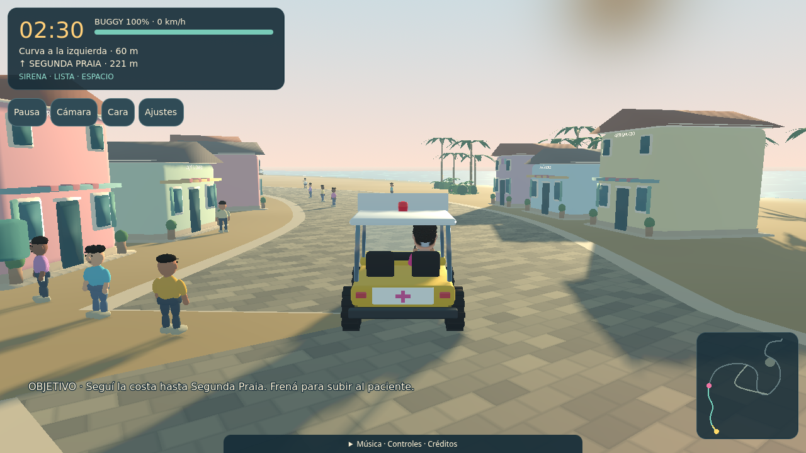
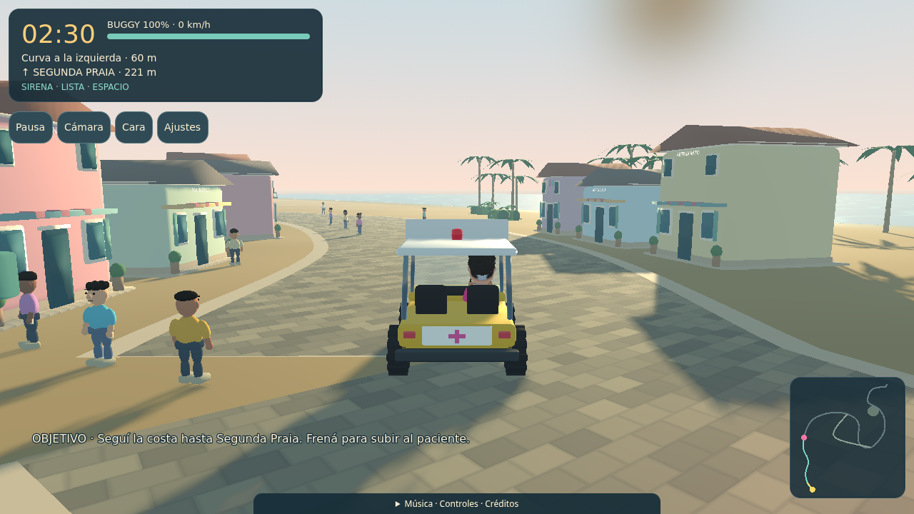
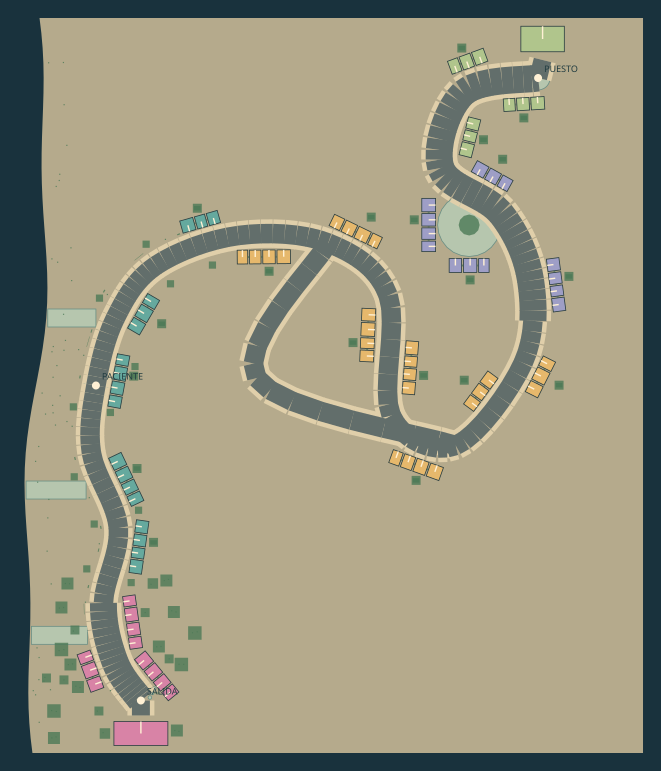
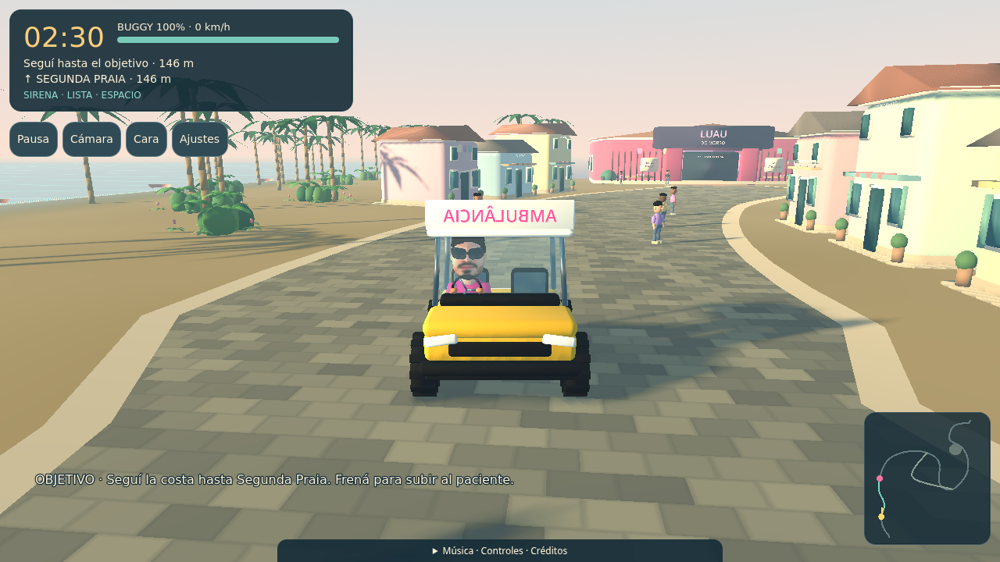

Un pueblo más urbano y compacto
Rama de revisión: feat/compact-village. Las 80 parcelas están ubicadas y tienen colisión. El acabado nuevo se presenta primero en disco y primera curva; el resto aparece como volúmenes provisionales. Pages conserva la versión anterior mientras se revisa este tramo. La aprobación del protagonista se mantiene por separado.
Conducir el tramo local → · Comprobación de las parcelas · Estado y reproducción
Antes y después
Mismas coordenadas, orientación, calidad Alta y resolución 1280×720. Las fachadas ahora miran al camino y el margen con la carretera permanece libre.

La salida conduce entre conjuntos de viviendas y comercios, con entradas y accesorios dentro de cada parcela.Recorrido visual por el tramo

Distancia desde la salida: 0 metros.Seis posiciones controladas a lo largo de 75 metros. Sirven para revisar composición y lectura de la calle; no representan una medición de fluidez. El enlace de conducción permite recorrerlo con los controles normales.
Plano completo de las 80 parcelas
Disco: 12Costa: 18Comercio: 26Plaza: 14Puesto: 10

La línea clara dentro de cada casa indica su frente. Los espacios verdes claros reservan vistas, plaza y maniobras; el borde claro del camino muestra el margen lateral de tres metros.
La cámara alternativa sigue disponible mediante C.Revisión artística de este nuevo conjunto: pendiente. La extensión del acabado y la publicación final se realizan después de resolverla.